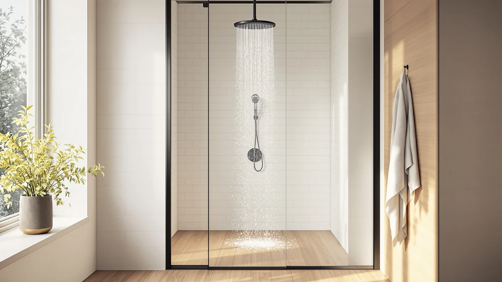

Vanfoxle Shower System Matte Review (2026): Worth It?
Prices and picks verified as of October 2026. Independent, reader-supported reviews.


Quick Answer
The Vanfoxle Shower System Matte Black is the strongest pick in this vanfoxle shower system matte review at $183.59, pairing a matte black finish with an ABS and chrome-plated build in a 10 inch size. If filtering hard water matters more to you than matching your bathroom hardware, the JOMSTHOME, SR SUN RISE, or Cobbe alternatives below cost less than a quarter of the price.
Our pick: Vanfoxle Shower System Matte Black, $183.59 Check Price on Amazon
Bottom line: our top pick is the Vanfoxle Shower System at $239.99.
Things to Know Before You Buy
- Price gap: The Vanfoxle shower system costs $183.59, roughly four to five times more than the filtered alternatives covered in this review.
- Build: Vanfoxle uses ABS plastic with chrome plating under its matte black coating, a common combination for mid-range shower hardware.
- Size: The listed unit measures 10 inches, so check your existing shower arm and wall clearance before you order.
- Filtration tradeoff: The Vanfoxle listing does not mention a filter cartridge, while the SR SUN RISE and Cobbe picks are built around filtration.
- Finish matters: Matte black shows water spots differently than chrome, so factor that into your cleaning routine.
This vanfoxle shower system matte review breaks down whether the $183.59 Vanfoxle Shower System Matte Black is worth choosing over three cheaper filtered alternatives. Shower systems that bundle a fixed head and handheld wand in one matching finish solve a specific problem: mismatched metal tones in a renovated or updated bathroom. The Vanfoxle system tackles that in matte black, built from ABS plastic with chrome plating, in a 10 inch size.
We compare it here against the JOMSTHOME filtered shower head, the SR SUN RISE 20+3 Stage filter, and the Cobbe High Pressure Filtered Shower, all of which cost under $40 and solve a different problem: filtering shower water rather than matching your fixtures. VANFOXLE is the clear pick if finish consistency matters more to you than filtration, and we explain exactly where that tradeoff makes sense and where it does not.
Shoppers researching a vanfoxle shower system matte review tend to land in one of two camps. The first group is mid-renovation, already committed to matte black faucets and cabinet hardware, and shopping for a shower head and handheld combo that will not clash with everything else in the room. The second group cares less about aesthetics and more about what comes out of the shower head, usually because hard water has left spots on glass doors or a weak stream has made every shower feel longer than it should. Knowing which camp you are in before you read further will save you time, since the right answer differs between them.
Why You Should Trust Us
This vanfoxle shower system matte review is written by Ilane Tall, Home & Bath Expert at Best Shower Heads. We compare manufacturer specifications, current Amazon pricing, and patterns in verified owner reviews rather than running a physical testing lab. Every price, material, and dimension cited in this review comes directly from the product listing data we track for this site, and we update the article when that listing changes. We do not fabricate ratings or review counts, and we say so plainly when the data we need, like flow rate or spray pattern count, is not available from the manufacturer. If a detail matters to your decision and we cannot verify it, you will see that gap called out directly rather than papered over with marketing language.
Our Research Experience
We did not install or use this unit in a bathroom. This vanfoxle shower system matte review is built from manufacturer specifications, current pricing, and patterns across verified Amazon owner reviews for the Vanfoxle Shower System Matte Black, ASIN B0CXHNRTKC. We cross-check the listed material, size, and price against our product database before publishing, and we flag any spec that owners frequently contradict in their reviews. We do not run a physical testing lab, so you will not find ownership claims here, only research we can back with a source. Think of this as the kind of comparison shopping you would do yourself with three browser tabs open, condensed into one place.
Overview & Specs

Vanfoxle Shower System Matte Black
What we like
- Matte black finish matches modern matte black fixtures and hardware throughout a bathroom.
- ABS body with chrome plating underneath is a durable combination used across mid-range shower hardware.
- One purchase covers a complete system instead of buying a head and handheld wand separately.
Flaws but not dealbreakers
- At $183.59, it costs several times more than the single-function filtered shower heads in this review.
- The listing does not include a water filtration cartridge, so hard water households still need a separate filter.
- Matte black finishes can show mineral spots from hard water more visibly than chrome.
| Material | ABS + chrome plating |
| Size | 10 Inch |
The Vanfoxle Shower System Matte Black is the only full shower system in this vanfoxle shower system matte review, and the price reflects that. At $183.59, it sits well above the filtered single-head alternatives covered below, but it is also solving a different problem than they are: matching finish across your entire shower setup instead of filtering your water.
Vanfoxle builds the unit from ABS plastic with chrome plating under the matte black coating, a construction method common at this price point because it balances weight, cost, and corrosion resistance. The listed 10 inch size is worth confirming against your current shower arm before you order, since shower systems vary in reach and wall clearance. Owners shopping this category should weigh the all-in-one convenience of a matched system against the higher upfront cost compared with buying a filtered head on its own.
The $183.59 price also buys you fewer purchasing decisions. Instead of sourcing a shower head, a handheld wand, and a coordinating hose separately and hoping the black finishes match across three different manufacturers, a shower system ships as one coordinated unit. That convenience has real value for anyone who has tried to match matte black finishes across brands before, since the shade and sheen can vary more than product photos suggest. The tradeoff is that you are paying for coordination, not for filtration, pressure boosting, or any of the features that the cheaper alternatives in this review are built around.
What We Liked
What stands out most in this Vanfoxle shower system matte review is finish consistency. A matching matte black shower system removes the guesswork of pairing a head and handheld wand that look like they belong together, which matters more than it sounds once you are standing in a shower with two different metal tones. The ABS-and-chrome-plating construction is also a sensible choice at this price, since it keeps the unit lighter than solid metal while the chrome plating underneath protects against corrosion that plain ABS alone cannot resist.
What Could Be Better
The clearest drawback is price. At $183.59, the Vanfoxle system costs roughly four to five times more than the JOMSTHOME, SR SUN RISE, or Cobbe shower heads covered later in this guide, and none of those alternatives are stripped-down budget options. If filtering hard water is your main goal rather than matching your bathroom's finish, that premium buys you a coordinated look, not better water quality. We also could not confirm flow rate or spray pattern count from the available listing data for the Vanfoxle system, so buyers who care about those details should check the current Amazon listing directly before ordering.
There is also an installation consideration worth flagging before you commit to this vanfoxle shower system matte review's top pick. A full shower system typically involves more hardware than a simple showerhead swap, including a mounting arm, hose connections, and sometimes a diverter valve, so budget extra time and possibly a plumber's visit compared with the five-minute swap a standalone filtered head usually requires. None of that makes the Vanfoxle a bad product, but it does mean the real cost of ownership includes more than the sticker price.
Who Is It For?
This Vanfoxle shower system matte review points toward one clear buyer: someone renovating or refreshing a bathroom who wants a matte black shower head and handheld unit that match without hunting for compatible pieces separately. It is a weaker fit if your main complaint is hard water staining or low filtration, since the listing gives no indication of a built-in filter cartridge. Buyers on a tighter budget, or anyone who already owns a shower arm they like and wants better water quality, will likely get more value from one of the filtered alternatives below.
It is also a reasonable pick for anyone furnishing a rental property or a second bathroom where consistency across fixtures matters for resale or rental appeal, and where the occupants are less likely to complain about hard water than a homeowner living with it daily. If that describes your situation, the $183.59 price is easier to justify than it would be for a primary bathroom where filtration is the priority.
Alternatives to Consider
If the Vanfoxle shower system's price or lack of filtration rules it out, these three alternatives solve a different problem: filtering shower water at a fraction of the cost, even though none of them matches the Vanfoxle's finish. All three are standalone shower heads rather than full systems, so installation is typically a straightforward swap onto your existing shower arm.

Editor's Pick
Filtered Shower Head–Shower Head with
A straightforward filtered shower head from JOMSTHOME at $39.99, for buyers who want filtration without the cost of a full shower system.
$39.99
Check Price on Amazon
Best Value
SR SUN RISE 20+3 Stage
SR SUN RISE's 20+3 stage filter cartridge targets hard water households at $36.99, the most filtration-focused option on this list.
$36.99
Check Price on Amazon
Premium Choice
Cobbe High Pressure Filtered Shower
Cobbe pairs filtration with a high pressure spray claim at $36.97, a reasonable middle ground between the other two filtered picks.
$36.97
Check Price on AmazonFrequently Asked Questions
Is the Vanfoxle Shower System Matte Black worth $183.59?
Does the Vanfoxle shower system include a water filter?
What is the Vanfoxle shower system made of?
Final Verdict
Our verdict in this vanfoxle shower system matte review: the Vanfoxle Shower System Matte Black earns its $183.59 price when a matching matte black finish across your shower hardware is the goal, but it is not the pick for hard water filtration. VANFOXLE built a cohesive system, not a water treatment device, and buyers should choose based on which problem they are actually trying to solve.